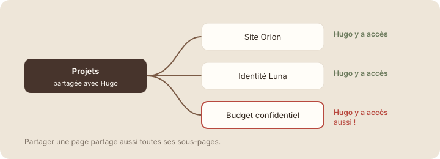

Avant de partager
À la fin de cette leçon, tu sauras vérifier une page avant de la partager, et garder des accès à jour dans la durée.
Étape 1 : comprendre
Partager prend deux secondes. Mal partager peut coûter cher : un budget lu par la mauvaise personne, une page effacée par erreur. Avant de cliquer sur « Inviter », prends dix secondes pour vérifier quatre points.
- Le contenu : la page contient-elle des informations sensibles (salaires, données personnelles, budget, mots de passe) ? Si oui, la personne doit-elle vraiment les voir ?
- Les sous-pages : partager une page partage aussi toutes ses sous-pages. Une page confidentielle rangée dedans devient visible.
- Le niveau d'accès : le plus bas qui suffit (leçon 7.2).
- L'accès général : « Seules les personnes invitées », sauf raison précise.
Et après le partage, pense à retirer les accès qui ne servent plus : un stagiaire qui a fini son stage, un client dont le projet est terminé.

Les sous-pages héritent des accès de leur page parente : vérifie ce qu'elle contient avant de la partager.
Attention : ne range jamais une page confidentielle dans une page largement partagée. Déplace-la ailleurs, dans « Pages privées » ou dans une page partagée seulement avec les bonnes personnes. Ne colle jamais de mot de passe dans une page Notion, même privée.
Partager tel quel ou corriger ?
Emma s'apprête à partager plusieurs pages. Pour chaque situation, est-ce que le partage peut se faire tel quel ?
Vérifier les accès de ton espace
- Ouvre la page « Studio Nova » et clique sur « Partager ». Note qui a accès : tes réglages s'appliquent aussi aux cinq parties qu'elle contient.
- Déplie « Studio Nova » dans la barre latérale et parcours ses sous-pages. Y a-t-il une page qu'une personne invitée ne devrait pas voir ?
Capture d'écran Notion Accès hérité de la page parente · images/captures/m07-acces-herite.png
- Si oui, déplace-la hors de « Studio Nova » avec « Déplacer vers ».
- Dans le menu Partager, vérifie chaque niveau d'accès et baisse ceux qui sont trop larges.
- Retire l'accès aux personnes qui n'en ont plus besoin (menu du niveau, puis « Retirer »).
Étape 4 : vérifier
À retenir
- Avant de partager : contenu, sous-pages, niveau d'accès, accès général.
- Les sous-pages héritent des accès de leur page parente.
- On retire les accès qui ne servent plus.
Choisis une réponse avant de valider.
La sous-page hérite des accès : le client pourrait l'ouvrir. Il faut la sortir de la page partagée.
Fin du module 7
Exercice récapitulatif du module · dans Notion
Partager ton espace en sécurité
Applique le module à ton espace d'équipe. Si personne ne peut t'aider, fais les vérifications sans inviter personne. Coche chaque étape une fois réalisée.
Résultat attendu
Une page partagée avec un niveau d'accès justifié, aucune information sensible exposée, et une discussion résolue sur la page.
Quiz du module 7
Choisis une réponse avant de valider.
Lire suffit : Peut consulter. Le niveau le plus bas qui permet de faire son travail.
Choisis une réponse avant de valider.
Les sous-pages héritent des accès de la page qui les contient.
Choisis une réponse avant de valider.
La mention envoie une notification dans la Boîte de réception de Lucas.
Choisis une réponse avant de valider.
Seules les personnes invitées peuvent ouvrir la page : un lien transféré par erreur ne suffit pas.